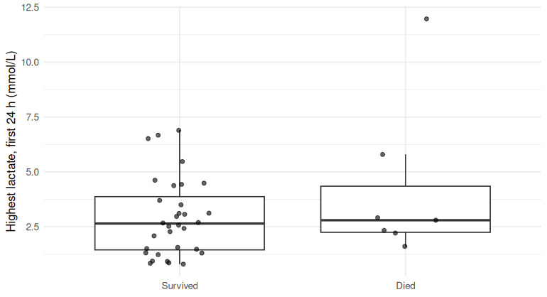

This article builds a small cohort from the open MIMIC-IV demo, end to end: a project folder, the raw files, the cohort, the harmonized tables, and a first look at the data. It takes a few minutes and needs no PhysioNet account. Every output below was produced by running the code shown.
What you need
-
R 4.1 or later, with rendehR installed:
install.packages("pak") pak::pak("ATE-DRIVEN-lab/rendehR", dependencies = TRUE)dependencies = TRUEalso installs the suggested packages, among them ggplot2 for the plot below and shiny for the explorer. A PostgreSQL server on which your user may create databases. rendehR creates the database it is told to use.
Create a project
A project is a folder that holds the configuration, the raw files and
the cohort files. ehr_init_project() creates it:
library(rendehR)
ehr_init_project(src_name = "mimic_iv_demo", base_dir = "rendehr-demo")Two files in rendehr-demo/config/ need your attention.
In ehr_config.json, set the database rendehR should use (it
is created on first use). This tutorial also sets
cohort.profile to "scid", the SCI reference
implementation, so the clinical enrichment stages run; new projects
default to "generic".
and put your PostgreSQL login in config_pass.json (the
PGHOST, PGPORT, PGUSER and
PGPASSWORD environment variables override it):
Then make it the active project, so later calls know where the files and the database are:
ehr_use_config("rendehr-demo/config/ehr_config.json")Download the demo
The MIMIC-IV demo has 100 patients and is open to everyone.
download_source() fetches it into the project and checks
every file against the release checksums:
download_source("mimic_iv_demo")
list.files("rendehr-demo/data/source_data/mimic_iv_demo/icu")
#> [1] "caregiver.csv.gz" "chartevents.csv.gz" "d_items.csv.gz"
#> [4] "datetimeevents.csv.gz" "icustays.csv.gz" "ingredientevents.csv.gz"
#> [7] "inputevents.csv.gz" "outputevents.csv.gz" "procedureevents.csv.gz"Build a cohort
rendehR defines the cohort first and only then imports the rows that belong to it. Two cohorts come with the package:
list_example_cohorts()[, c("name", "kind", "description")]
#> name kind
#> 1 scid icd
#> 2 sepsis3 sql
#> description
#> 1 Spinal cord injury - bundled ICD-9/10 list (the package reference cohort)
#> 2 Sepsis-3 (Singer 2016): SOFA >= 2 + suspicion of infection, per ICU stayrun_one_source() takes one source through every stage:
it imports the Sepsis-3 cohort to Parquet, loads it into PostgreSQL,
builds the visit windows and the cohort table, extracts the clinical
concepts and writes the harmonized tables.
stages <- run_one_source(
"mimic_iv_demo",
cohort_selection = cohort_selection_options(cohort = "sepsis3")
)
stages[, c("stage", "status", "seconds")]
#> stage status seconds
#> 1 import_cohort_general success 13.81676269
#> 2 run_db success 8.43055129
#> 3 run_raw_mods success 0.01351619
#> 4 build_window_tables success 0.03696799
#> 5 build_cohort_info_general success 1.54309034
#> 6 run_comorbidities success 0.23933816
#> 7 run_iss success 1.01669455
#> 8 run_concepts success 18.92962909
#> 9 run_harmonized_tables success 0.80097747To combine sources, and to get the analysis tables, merge them into one schema. With a single source this still gives the tables everything else reads:
merge_sources("mimic_iv_demo")Read the data
ehr_connect() keeps the connection details for the
functions that read data; with an active project it needs no
arguments.
ehr_connect()
cohort <- load_merged_cohort_info("rendehr")
nrow(cohort)
#> [1] 57
length(unique(cohort$src_patient_id))
#> [1] 47The demo has 62 ICU stays that meet Sepsis-3 in 47 patients; the cohort table holds their hospital admissions. One row per admission, with demographics and outcomes:
flat <- load_merged_flat("rendehr")
flat[1:5, c("src_patient_id", "age", "sex", "admission_type", "hospital_los", "hospital_mortality")]
#> src_patient_id age sex admission_type hospital_los hospital_mortality
#> 1 10002428 81.3 female emergency 2.83 0
#> 2 10002428 81.4 female emergency 10.98 0
#> 3 10002428 81.3 female emergency 17.09 0
#> 4 10002495 81.4 male urgent 6.89 0
#> 5 10003046 64.0 male elective 7.19 0Measurements come as a long table of concept_name, time
and value, or reshaped wide into time bins. Here, the extremes of the
first 24 hours after admission:
day1 <- load_merged_ts_wide(
"rendehr",
spec = list(heart_rate = c("min", "max"), lactate = "max", spo2 = "min"),
bin_min = 24 * 60,
window = c(0, 0)
)
head(day1)
#> ehr_id source_data src_patient_id src_admission_id t_bin heart_rate_min
#> 1 10002428_20321825 mimic_iv_demo 10002428 20321825 0 82
#> 2 10002428_23473524 mimic_iv_demo 10002428 23473524 0 67
#> 3 10002428_28662225 mimic_iv_demo 10002428 28662225 0 100
#> 4 10002495_24982426 mimic_iv_demo 10002495 24982426 0 83
#> 5 10003046_26048429 mimic_iv_demo 10003046 26048429 0 99
#> 6 10004235_24181354 mimic_iv_demo 10004235 24181354 0 101
#> heart_rate_max lactate spo2
#> 1 112 0.9 73
#> 2 109 1.5 96
#> 3 135 2.4 90
#> 4 133 4.4 84
#> 5 120 1.3 87
#> 6 144 4.5 90
library(ggplot2)
d <- merge(day1, flat[, c("ehr_id", "hospital_mortality")], by = "ehr_id")
d <- d[is.finite(d$lactate), ]
ggplot(d, aes(factor(hospital_mortality, labels = c("Survived", "Died")), lactate)) +
geom_boxplot(outlier.shape = NA) +
geom_jitter(width = 0.15, alpha = 0.6) +
labs(x = NULL, y = "Highest lactate, first 24 h (mmol/L)") +
theme_minimal()
plot of chunk lactate-plot
Explore it
The cohort explorer opens the same tables in the browser: cohort overview, filters and a characteristics table, outcomes and survival, one patient’s timeline, the concept inventory.
run_explorer("rendehr")See vignette("explorer", package = "rendehR") for a
tour.
Where to go next
-
vignette("projects"): the project folder, configuration, credentials and raw data -
vignette("cohorts"): defining your own cohort (ICD lists, IDs, SQL) and import scope -
vignette("pipeline"): the stages one by one, several sources, DuckDB, checks -
vignette("harmonized-data"): reading, reshaping and plotting the harmonized tables -
vignette("concepts"): the clinical concepts, their provenance, and adding your own